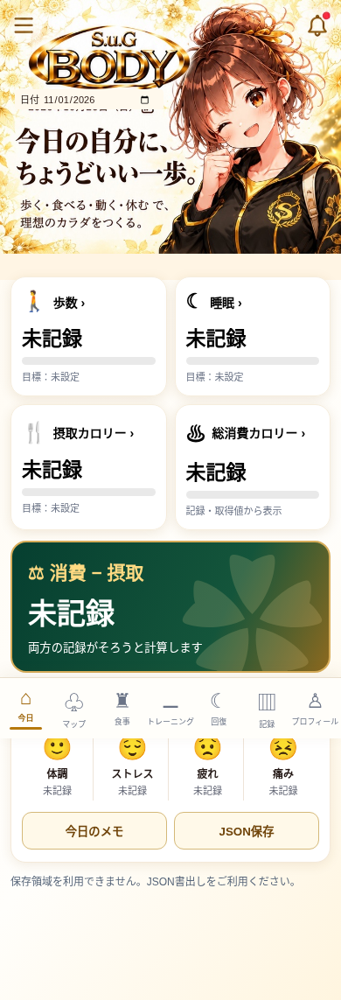
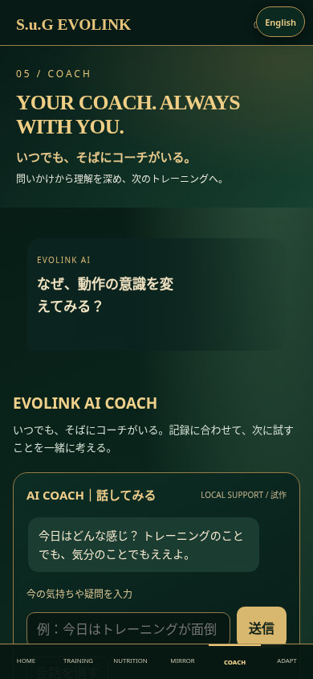
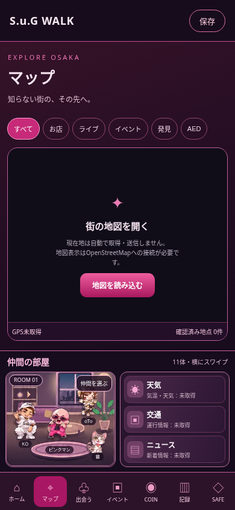

BODY
今日の身体を知る
食事・運動・回復を見渡し、日常を振り返る。

開発画面 · 2026年11月1日
S.u.G ORIGINAL APPS & FREE TOOLS
日常の記録や運動の計画に役立つアプリと無料ツール。ジムでのトレーニングとあわせて活用できます。
ORIGINAL APPS
BODY
食事・運動・回復を見渡し、日常を振り返る。

開発画面 · 2026年11月1日
eVo / EVOLINK
目的と記録をもとに、次のトレーニングを考える。

開発画面 · 2026年11月2日
WALK
街の発見や遊びを、外へ出るきっかけに。

開発画面 · 2026年11月11日
掲載は開発中の実画面です。提供時期・利用条件はお問い合わせください。アプリ間や店舗との自動連携を提供済みとする案内ではありません。
FREE TOOLS
無料ツールは下のリンクから利用できます。